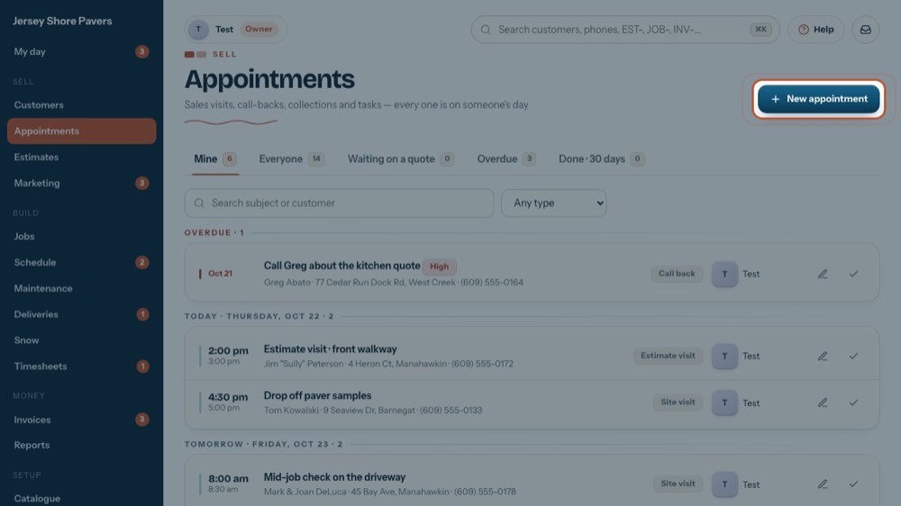
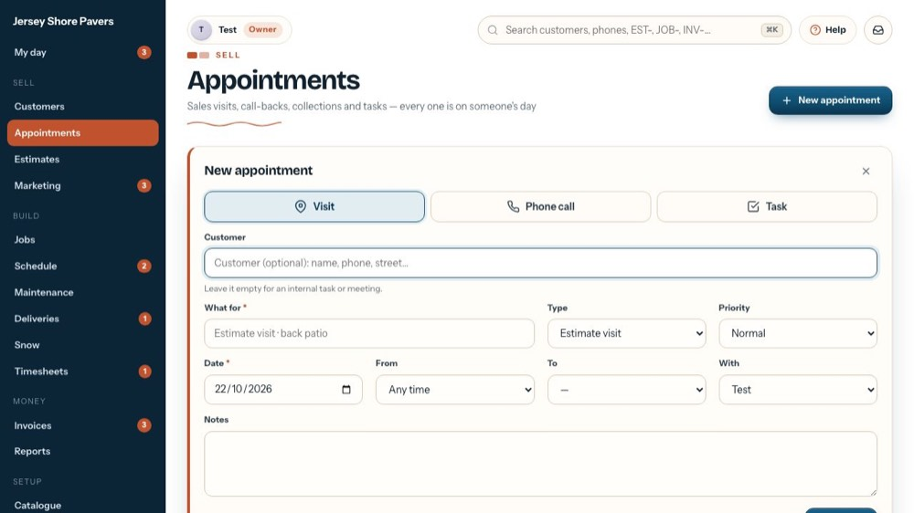
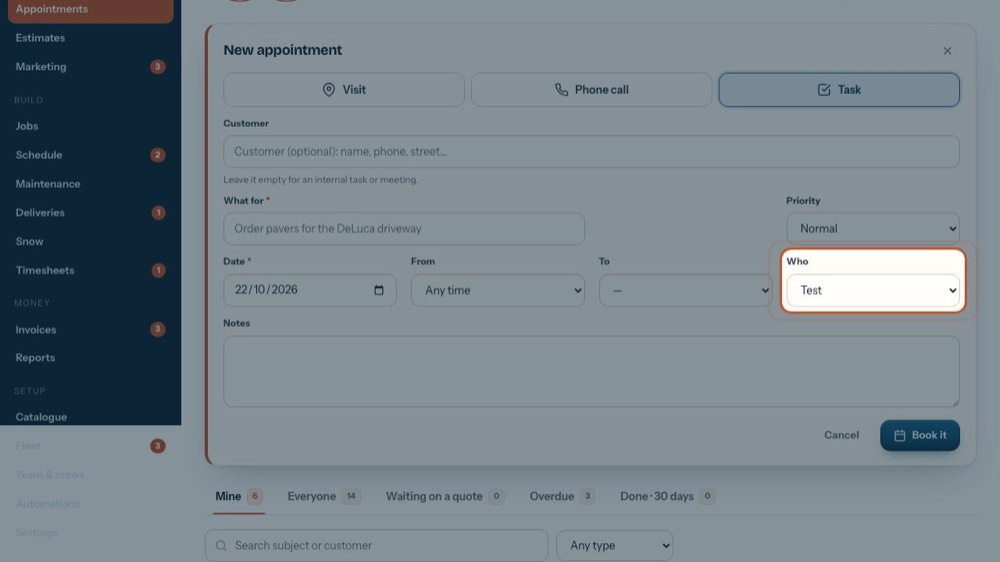
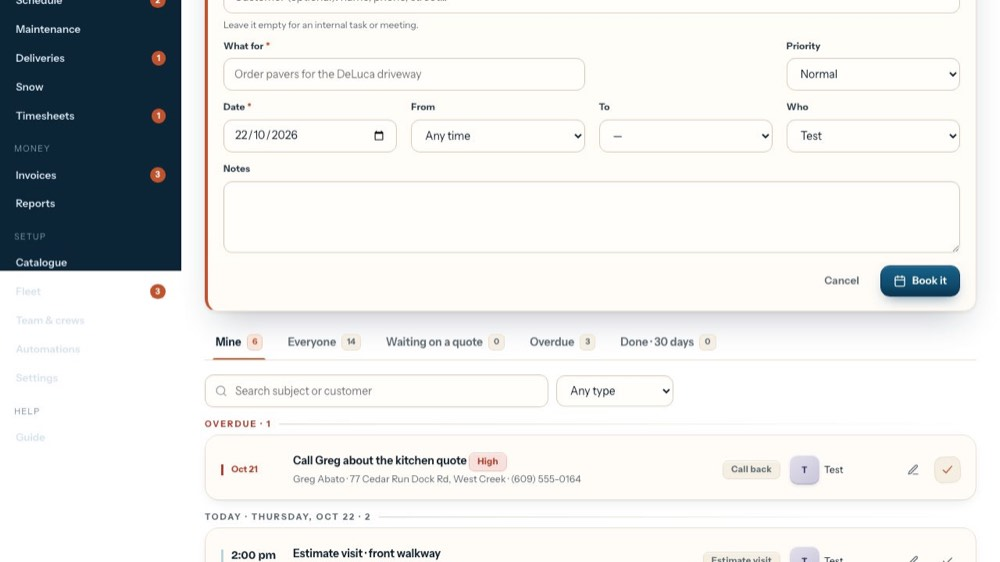

Give someone a task (to-do, internal meeting)
In the office app, press Help and type give someone a task
: the tour plays on your own screen, with your own data.
-

1New appointment
Tasks, visits and calls all start here (or from a customer).
-

2Choose Task
A task is any to-do: an internal meeting, an order to place, a follow-up.
-

3Anyone, crews included
Give it to anyone in the company. It shows on their phone under My appointments until they mark it done.
-

4Save it
Book it when it's real. The tour doesn't save anything.